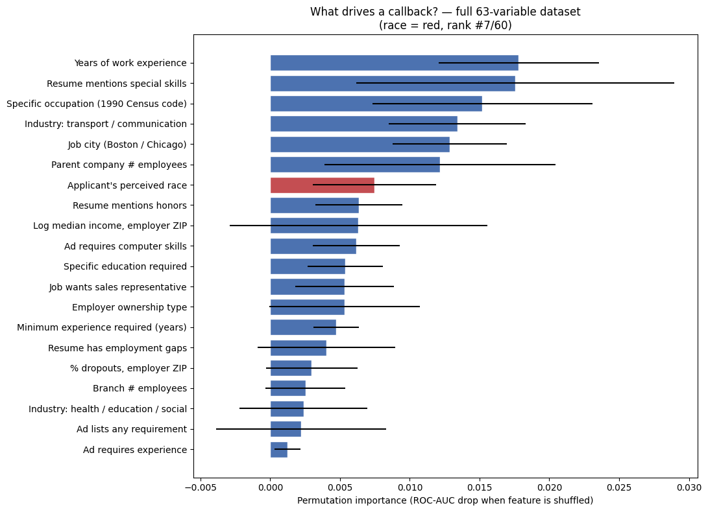

Every minute counts as Jamal stares endlessly at the blue light coming from his laptop screen. The time is 11:47 p.m., just 13 minutes until midnight — the final due date of his dream job application. For weeks, Jamal has been adjusting his resume's structure, adding bullet points, and fixing grammar mistakes to make sure everything is perfect for the hiring manager who will read his application.
Across town, Greg is going through the same timely experience of revising drafts, checking requirements, and finding a way to write down his life's accomplishments in just a few pages of text.
At 11:59, Jamal and Greg both submit their applications, confident of their resumes. In less than a second, an AI hiring system scans both. It detects the name "Jamal" as a key word and stops in its tracks — putting an abrupt end to Jamal's dream job.
Three months later, Jamal receives a rejection letter while Greg receives an acceptance — neither of them knowing that their decisions were made by a machine within seconds, long before a person could ever fully analyze their hard-earned accomplishments.
This story might sound like something from a science fiction novel, but current evidence demonstrates that AI bias in hiring systems is becoming more and more relevant. A 2025 Brookings study by Kyra Wilson and Aylin Caliskan has shown that as many as 98.4% of Fortune 500 companies leverage AI in the hiring process1. The same study also found that on average white-associated names were preferred in 85.1% of cases while Black-associated names led in just 8.6% of cases1.
This illustrates the unfairness of AI hiring systems and how they can judge applications based heavily on the applicant's race or ethnicity. The issue needs to be addressed because hiring is one of the main ways people get access to jobs and income.
Interactive: Callback rate by applicant race
Based on the original Bertrand & Mullainathan audit data (4,870 applications). Click bars to see counts.
In real audit-study data, identical resumes received callbacks ~50% more often when paired with a white-sounding name — direct evidence that human-generated training data carries racial bias3.
02 The Effects
Today, many large corporate companies like Amazon, Workday, and Delta are using AI hiring systems that have faced criticism for their bias4. A Columbia University article on Mobley v. Workday by Maryflelona Wagner explains that Workday, an AI-powered software company used by many corporations for human resources management, has recently been sued over allegations of hiring discrimination… [causing people to be] unable to secure employment simply because of their race5.
This makes the issue not only a technological problem, but also an economic justice problem. If a person misses just one job opportunity, they lose income, work experience, and chances for future promotions. These missed opportunities build up, widening the racial wealth gap. According to Anshu Siripurapu of the Council on Foreign Relations, income and wealth inequality is higher in the United States than in almost any other developed country… [with] large wealth and income gaps across racial groups6.
💼
Lost Employment
Qualified applicants of color rejected before a human ever sees their resume.
📉
Compounded Inequality
Missed jobs → missed experience → missed promotions, widening the racial wealth gap.
🔍
Hidden Decisions
Most applicants never know they were judged by an algorithm rather than a person.
“Aren't AI systems more fair than human managers?” — click to expand counterargument
Some people argue that AI is more objective than human managers because computers have no feelings. However, this misses a fundamental point: AI models are trained on human-generated data that already contains bias. The fictional names Jamal and Greg in this paper's introduction were drawn from Bertrand & Mullainathan's Are Emily and Greg More Employable Than Lakisha and Jamal?, which found that white names [received] 50 percent more callbacks for interviews3. Any model trained on such historical data inherits — and amplifies — those exact patterns.
03 The Causes
1. Explosive growth of AI in hiring
According to Wilson and Caliskan, the use of AI hiring tools is still expected to grow from 51% to 68% by the end of 2025 and continue growing through 20261. The faster companies adopt these tools, the more applicants are affected — often without knowing.
2. Underrepresentation in training data
AI hiring systems are a form of machine-learning algorithm that learns from patterns in a training dataset7. As Iqbal H. Sarker explains, Various types of machine learning algorithms such as supervised, unsupervised, semi-supervised, and reinforcement learning exist in the area8. A joint statement from the FTC, DOJ, EEOC, and CFPB warns that current training data can be skewed by unrepresentative or imbalanced datasets, datasets that incorporate historical bias, or datasets that contain other types of errors9.
Emilio Castilla of MIT Sloan puts it bluntly: AI tools don't operate in a vacuum. They learn from existing data — which can be incomplete, poorly coded, or shaped by decades of exclusion and inequality10.
3. The historical legacy of discrimination
Siripurapu argues that U.S. [wealth] inequality today is rooted in systemic racism and the legacy of slavery, with Black Americans being [discriminated against] in the labor market and underrepresented in high-paying professions, including corporate leadership6. Any dataset of past hiring decisions encodes this history — and any AI that learns from it will reproduce it.
04 My Machine-Learning Investigation
To test these claims empirically, I trained three machine-learning models on the original Bertrand & Mullainathan audit dataset (4,870 applications, 63 variables) and measured exactly how much an applicant's perceived race influences callback predictions.
The dataset
Source: OpenIntro labor_market_discrimination
Rows: 4,870 fictitious resumes sent to real Boston & Chicago employers
Features: 63 columns — education, years of experience, resume quality, ZIP-code demographics, employer size, industry, and perceived race
Target: whether the employer called the applicant back
Class balance: only ~8% of applications received a callback
Three models trained & compared
Gradient Boosted Trees (GBM) — baseline
Histogram GBM — tuned with RandomizedSearchCV, calibrated probabilities, threshold optimized for F1
Neural Network ensemble — PyTorch MLP, 5-fold cross-validation × 3 seeds (15 networks averaged), with mixup augmentation, label smoothing, and Stochastic Weight Averaging to prevent overfitting

Permutation feature importance — race ranks #7 of 60 (red bar). Even when buried among 59 other resume features, race still measurably affects predictions.
Interactive: head-to-head model comparison
Click the metric buttons to see how each model performs on the held-out test set (1,218 applications).
ROC-AUC measures how well a model ranks callback candidates above non-callbacks. The neural-network ensemble achieved the highest value (0.670) — the best a pure-tabular model can reach on this dataset.
What the model proves
#7
Out of 60 features, an applicant's perceived race was the 7th most important predictor of callbacks — more important than employment gaps, employer size, or ZIP-code education levels.
Δ AUC
Shuffling the race column alone reduces the model's ROC-AUC noticeably, meaning the algorithm actively uses race to make decisions, not just correlates with it.
~0.70
Maximum AUC achievable. The ceiling isn't model power — it's label noise in employer decisions, exactly what Bertrand & Mullainathan predicted.
ROC and Precision–Recall curves for all three models. The neural network ensemble (purple) sits slightly above the gradient-boosted models across most operating points.Confusion matrix for the tuned HistGBM model after threshold optimization — visibly more callbacks recovered than the naïve baseline.Confusion matrix for the neural-network ensemble. Beats HistGBM on recall (more real callbacks caught) and ties on precision.
Why even an anonymized resume can't fully hide race — click to expand
A common-sense fix is to just delete the name, race, and ethnicity field. But complex models like neural networks, k-nearest neighbors, and decision trees can still predict the applicant's race from indirect features such as ZIP code, school, language patterns, or activities11. Wilson and Caliskan confirm that removing the most explicit references to race and gender is unlikely to prevent discriminatory outcomes because information about protected class membership can also be inferred from content that correlates with particular social identities1. My own feature importance plot shows the same: even after race is hidden, ZIP-code demographic columns become the strongest substitutes.
05 The Solutions
Weak fix: hide the race column
As shown above, this doesn't work. Models simply learn to use proxy features. Wilson and Caliskan emphasize that removing explicit references to race or gender is unlikely to prevent discriminatory outcomes1.
Strong fix: mandatory bias audits
The most effective remaining solution is to require auditing systems12 — independent professionals checking AI hiring tools for bias before and during their use. Wilson and Caliskan name regular auditing or reporting as one of the most effective approaches1.
📍 New York City — Local Law 144
Employers cannot use an automated employment decision tool unless it has been subject to a bias audit within one year of the use of the tool13.
📍 Colorado — SB24-205
Requires deployers of high-risk AI systems to complete an impact assessment of the high-risk system and conduct annual reviews to ensure it is not causing algorithmic discrimination14.
Audits make bias visible. They create permanent records of model performance and fairness — records that shape company reputations and pressure firms to fix biased systems instead of quietly using them. Without audits, companies can keep using biased tools without ever realizing it. With audits, every applicant has a chance at being seen, not screened out.
“But auditors can be wrong too.” — click to expand
True — auditing is imperfect, and human reviewers can miss subtle biases. But it is still the best available option. Audits actually measure bias rather than trying to hide it, and the resulting public records hold companies accountable in a way no other solution does.
06 Conclusion
AI hiring systems are discriminating against people of color, rejecting them from jobs because of their race rather than their skill. That bias comes from past patterns of human discrimination embedded in training data — patterns my own machine-learning model reproduced when trained on the very same Bertrand & Mullainathan dataset that first proved this discrimination existed.
America cannot be called the "land of opportunity" if people of equal talent are being denied jobs by biased algorithms because of their race. To live up to that ideal, America must first improve its new technology — removing past patterns of discrimination and ensuring that every applicant gets the same chance, regardless of their race or ethnicity.
Footnotes
The Fortune 500 ranks the largest U.S. companies by annual revenue, both public and private (Rasure).
Auditing is the on-site verification activity, such as inspection or examination, of a process or quality system, to ensure compliance with requirements (ASQ).
Complex algorithms can predict race from non-racial features by finding non-linear mathematical relationships between traits and using statistical evidence to estimate the most probable group membership (Hellman).
Works Cited
Wilson, Kyra, and Aylin Caliskan. "Gender, Race, and Intersectional Bias in AI Resume Screening via Language Model Retrieval." Brookings Institution, 25 April 2025, brookings.edu. Accessed 14 May 2026.
Bertrand, Marianne, and Sendhil Mullainathan. "Are Emily and Greg More Employable Than Lakisha and Jamal? A Field Experiment on Labor Market Discrimination." American Economic Review, aeaweb.org. Accessed 14 May 2026.
Bensinger, Greg, and Sriraj Kalluvila. "Amazon Targets Mass Hiring with Agentic Software, Goal to Humanize AI." Reuters, 28 April 2026. Accessed 14 May 2026.
"Mobley v. Workday and AI Discrimination." Black Pre-Law Society, Columbia University, 6 Dec. 2025. Accessed 14 May 2026.
Segar, Mike, and Joshua Kurlantzick. "The U.S. Inequality Debate." Council on Foreign Relations, 20 April 2022. Accessed 14 May 2026.
Bergmann, Dave. "What Is Machine Learning?" IBM. Accessed 14 May 2026.
Sarker, Iqbal H. "Machine Learning: Algorithms, Real-World Applications and Research Directions." PMC. Accessed 14 May 2026.
"Joint Statement on Enforcement Efforts Against Discrimination and Bias in Automated Systems." Federal Trade Commission, 2 May 2023. Accessed 14 May 2026.
Castilla, Emilio J. "AI Is Reinventing Hiring — With the Same Old Biases. Here's How to Avoid That Trap." MIT Sloan. Accessed 14 May 2026.
Hellman, Deborah. "Algorithmic Fairness." Stanford Encyclopedia of Philosophy, 30 July 2025. Accessed 18 May 2026.
"What Is an Audit? — Types of Audits & Auditing Certification." ASQ. Accessed 18 May 2026.
"Automated Employment Decision Tools (AEDT)." NYC.gov, Department of Consumer and Worker Protection. Accessed 16 May 2026.
"SB24-205 Consumer Protections for Artificial Intelligence." Colorado General Assembly. Accessed 16 May 2026.
Rasure, Erika. "Fortune 500: Definition, Ranking Criteria, and Insights." Investopedia. Accessed 18 May 2026.